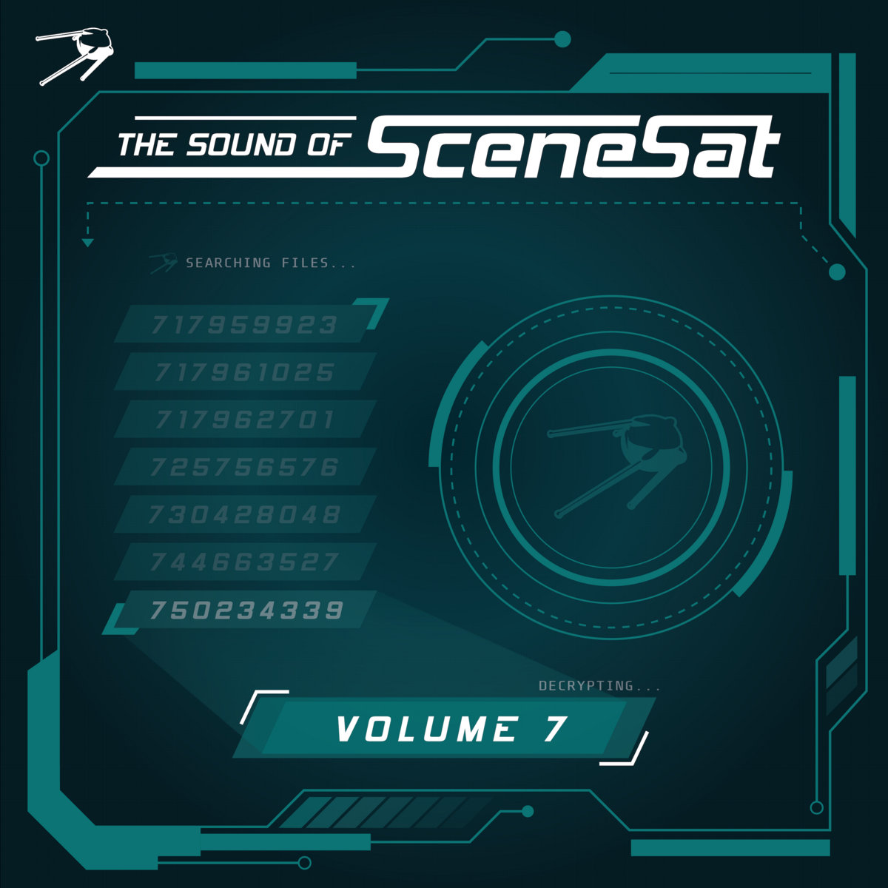

The Sound of SceneSat Volume 7

Details
Featuring 91 tracks and several popular demoscene artists! This is my first debut on a big project like this! I hope you'll not only enjoy my, but the works of other musicians too!